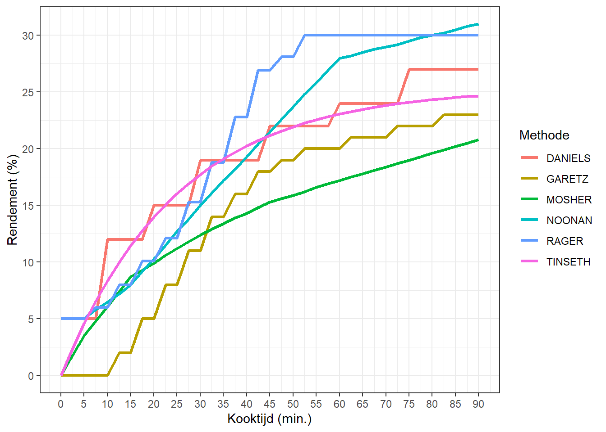

| Boiltime | RAGER | GARETZ | MOSHER | TINSETH | NOONAN | DANIELS |
|---|---|---|---|---|---|---|
| 0.0 | 5.0 | 0 | 0.0 | 0.000 | 5.0 | 5 |
| 2.5 | 5.0 | 0 | 1.8 | 2.414 | 5.0 | 5 |
| 5.0 | 5.0 | 0 | 3.5 | 4.598 | 5.0 | 5 |
| 7.5 | 6.0 | 0 | 4.8 | 6.575 | 5.8 | 5 |
| 10.0 | 6.0 | 0 | 6.1 | 8.363 | 6.5 | 12 |
| 12.5 | 8.0 | 2 | 7.4 | 9.981 | 7.2 | 12 |
| 15.0 | 8.0 | 2 | 8.7 | 11.446 | 8.0 | 12 |
| 17.5 | 10.1 | 5 | 9.3 | 12.770 | 9.2 | 12 |
| 20.0 | 10.1 | 5 | 9.9 | 13.969 | 10.3 | 15 |
| 22.5 | 12.1 | 8 | 10.6 | 15.054 | 11.5 | 15 |
| 25.0 | 12.1 | 8 | 11.2 | 16.035 | 12.7 | 15 |
| 27.5 | 15.3 | 11 | 11.8 | 16.924 | 13.8 | 15 |
| 30.0 | 15.3 | 11 | 12.4 | 17.727 | 15.0 | 19 |
| 32.5 | 18.8 | 14 | 12.9 | 18.454 | 16.1 | 19 |
| 35.0 | 18.8 | 14 | 13.4 | 19.112 | 17.2 | 19 |
| 37.5 | 22.8 | 16 | 13.9 | 19.707 | 18.2 | 19 |
| 40.0 | 22.8 | 16 | 14.3 | 20.246 | 19.3 | 19 |
| 42.5 | 26.9 | 18 | 14.8 | 20.733 | 20.4 | 19 |
| 45.0 | 26.9 | 18 | 15.3 | 21.174 | 21.5 | 22 |
| 47.5 | 28.1 | 19 | 15.6 | 21.574 | 22.6 | 22 |
| 50.0 | 28.1 | 19 | 15.9 | 21.935 | 23.7 | 22 |
| 52.5 | 30.0 | 20 | 16.2 | 22.261 | 24.8 | 22 |
| 55.0 | 30.0 | 20 | 16.6 | 22.557 | 25.8 | 22 |
| 57.5 | 30.0 | 20 | 16.9 | 22.824 | 26.9 | 22 |
| 60.0 | 30.0 | 20 | 17.2 | 23.066 | 28.0 | 24 |
| 62.5 | 30.0 | 21 | 17.5 | 23.285 | 28.2 | 24 |
| 65.0 | 30.0 | 21 | 17.8 | 23.484 | 28.5 | 24 |
| 67.5 | 30.0 | 21 | 18.1 | 23.663 | 28.8 | 24 |
| 70.0 | 30.0 | 21 | 18.4 | 23.825 | 29.0 | 24 |
| 72.5 | 30.0 | 22 | 18.7 | 23.972 | 29.2 | 24 |
| 75.0 | 30.0 | 22 | 19.0 | 24.105 | 29.5 | 27 |
| 77.5 | 30.0 | 22 | 19.3 | 24.225 | 29.8 | 27 |
| 80.0 | 30.0 | 22 | 19.6 | 24.334 | 30.0 | 27 |
| 82.5 | 30.0 | 23 | 19.9 | 24.432 | 30.2 | 27 |
| 85.0 | 30.0 | 23 | 20.2 | 24.521 | 30.5 | 27 |
| 87.5 | 30.0 | 23 | 20.5 | 24.602 | 30.8 | 27 |
| 90.0 | 30.0 | 23 | 20.8 | 24.675 | 31.0 | 27 |
Hoprendement - Kooktijd
rekenen
hop
Relatie tussen de hopbitterheid en de kooktijd.
In het artikel What’s your IBU van Michael Hall (1997) is een tabel gepubliceerd met daarin het hoprendement als functie van de kooktijd. Deze waarden zijn te zien in Tabel 1.
In Figuur 1 zie je het hoprendement als van functie van de kooktijd voor een wort met SG 1,050, met verse hopbloemen, geen hopzak, geen filtering en een gist met gemiddelde uitvlokking.
